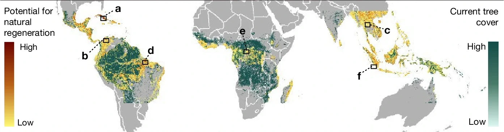
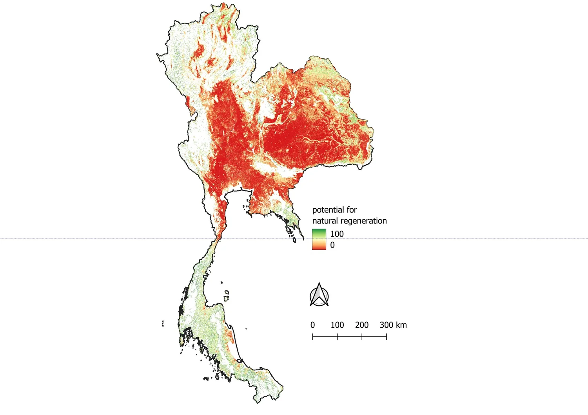

งานวิจัยสำคัญในวารสาร Nature โดย Williams et al. (2024) ได้สร้างแผนที่ศักยภาพการฟื้นฟูป่าเขตร้อนทั่วโลก โดยชี้ว่าพื้นที่ป่าที่ถูกตัดถางทิ้งไว้มีศักยภาพ "ฟื้นตัวได้เองตามธรรมชาติ (Natural Regeneration)" สูงถึง 215 ล้านเฮกตาร์ — มีขนาดใหญ่กว่าประเทศเม็กซิโกทั้งประเทศ
สำหรับ ประเทศไทย ซึ่งตั้งอยู่ในเขตชีวภูมิศาสตร์ Indomalayan tropics ข้อมูลเชิงพื้นที่ความละเอียด 30 เมตรนี้ เป็นเครื่องมือทรงพลังในการชี้เป้า พื้นที่ที่คุ้มค่าการลงทุนฟื้นฟูที่สุด โดยไม่ต้องพึ่งพางบประมาณการเพาะกล้าไม้และการปลูกซ้ำที่มีต้นทุนสูง
ฟื้นฟูป่าโดยอาศัยศักยภาพเดิมของระบบนิเวศ — การกระจายเมล็ดตามธรรมชาติ (Seed rain) จากนกและสัตว์ป่า, ไม้ที่แตกหน่อจากตอไม้เดิม (Coppicing), และการตั้งตัวของกล้าไม้ตามฤดูกาล
การฟื้นฟูป่าแบบดั้งเดิมที่เน้นการเตรียมกล้าไม้ ปรับหน้าดิน ขุดหลุม และปลูกต้นไม้เป็นแนวแถว ซึ่งต้องอาศัยการดูแลรดน้ำและกำจัดวัชพืชต่อเนื่องหลายปี
งานวิจัยของ Williams et al. ได้สร้าง จุดเปลี่ยนทางวิทยาศาสตร์: ในอดีต แผนที่การฟื้นฟูมักพึ่งพา Expert Opinion หรือสมมติฐานว่า "เดิมพื้นที่นี้น่าจะเคยเป็นป่าอะไร" แต่งานนี้ใช้ ข้อมูลดาวเทียมจริงในช่วงปี 2000–2016 ของพื้นที่ที่เคยถูกตัดถางและ ได้ฟื้นตัวกลับมาเป็นป่าสำเร็จด้วยตัวเองจริง (รวม 31.6 Mha จาก 4.78 ล้าน patches) มาเป็นชุดข้อมูลฝึกสอน (Training Data) ของ Machine Learning


ประเทศไทยมีพื้นที่ที่ถูกตัดถางและมีศักยภาพฟื้นฟูตามธรรมชาติวิเคราะห์รวม 44.76 ล้านเฮกตาร์ (~87% ของพื้นที่ประเทศ) โดยพื้นที่ส่วนใหญ่ (48.1%) อยู่ในระดับปานกลาง ซึ่งสามารถเร่งกระบวนการฟื้นตัวได้ด้วยการช่วยฟื้นฟูธรรมชาติ (Assisted Natural Regeneration - ANR)
| ยุทธศาสตร์ | สัดส่วนฟื้นเอง | งบประมาณที่ใช้ (ต่อ 1M ไร่) | งบที่ประหยัดได้ | ความหลากหลายชีวภาพ | ความเสี่ยงไฟป่า/ล้มเหลว | ความคุ้มค่าเชิงนโยบาย |
|---|---|---|---|---|---|---|
| 1. แบบเดิม (Status Quo) | 20% | 32,800 ล้านบาท | เกณฑ์ฐาน (0%) | ต่ำ (monoculture เสี่ยง) | สูง (หากขาดงบดูแล 3 ปี) | ต่ำสุด (เสียงบประมาณสูง) |
| 2. สมดุล NDC Target | 50% | 22,000 ล้านบาท | ประหยัด 18,000 ล้านบาท (45%) | ปานกลาง-ดี | ปานกลาง | เหมาะกับแปลง ANR ปานกลาง |
| 3. ธรรมชาติเข้มข้น (Nature-Led) | 85% | 9,400 ล้านบาท | ประหยัด 30,600 ล้านบาท (76.5%) | สูงสุด (นิเวศป่าแท้) | ต่ำ (ระบบรากแก้วทนแล้ง) | แนะนำสูงสุดสำหรับไทย ⭐ |
| 4. ปรับค่าเอง (Custom Simulator) | 80% | 11,200 ล้านบาท | ประหยัด 28,800 ล้านบาท | ตามสัดส่วน | แปรผัน | โมเดลจำลองเฉพาะกิจ |
จัดลำดับแปลงป่าสงวนและเขตอุทยานฯ ที่สามารถปล่อยฟื้นตัวเองได้ เพื่อจัดสรรงบประมาณแผ่นดินไปยังพื้นที่ที่จำเป็นต้องปลูกจริง ลดการสูญเสียงบปลูกซ้ำซ้อนในพื้นที่ที่ฟื้นเองได้
ประเมินปริมาณการกักเก็บก๊าซเรือนกระจกในระดับชาติจากภาคป่าไม้ (LULUCF) ตามกรอบความตกลงปารีส และหนุนการซื้อขายคาร์บอนเครดิตตาม Article 6 อย่างโปร่งใสและมีข้อมูลอ้างอิง
ชี้แนวเชื่อมต่อทางนิเวศระหว่างกลุ่มป่ามรดกโลก (เช่น ผืนป่าตะวันตก และดงพญาเย็น-เขาใหญ่) ผ่านหย่อมป่าที่มีศักยภาพฟื้นตัวสูง สร้างทางเดินสัตว์ป่าโดยไม่ต้องเวนคืนที่ดินแปลงใหญ่
ใช้เป็นเกณฑ์วิทยาศาสตร์ในการประเมินผลกระทบสิ่งแวดล้อมของโครงการโครงสร้างพื้นฐาน หากโครงการตัดผ่านพื้นที่ที่มีศักยภาพ PNV สูง จะต้องกำหนดมูลค่าการชดเชยทางนิเวศที่เหมาะสม